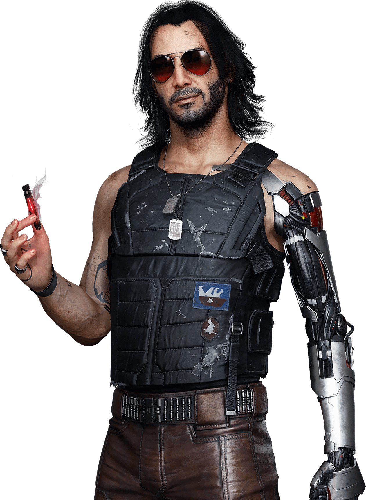
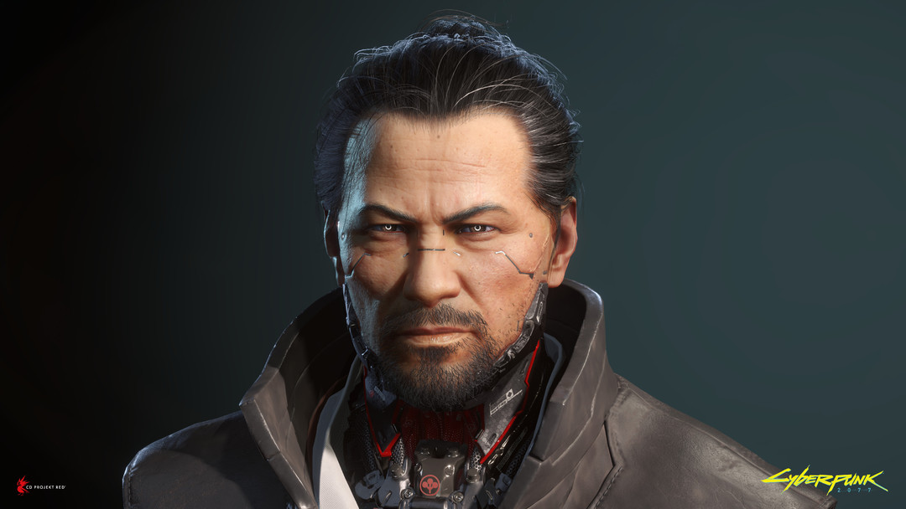
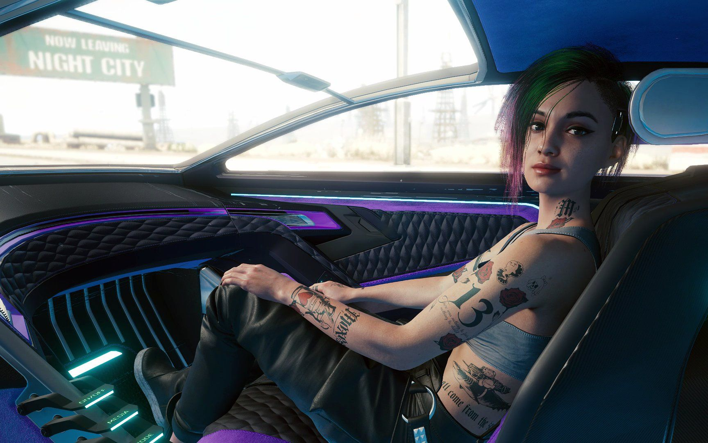
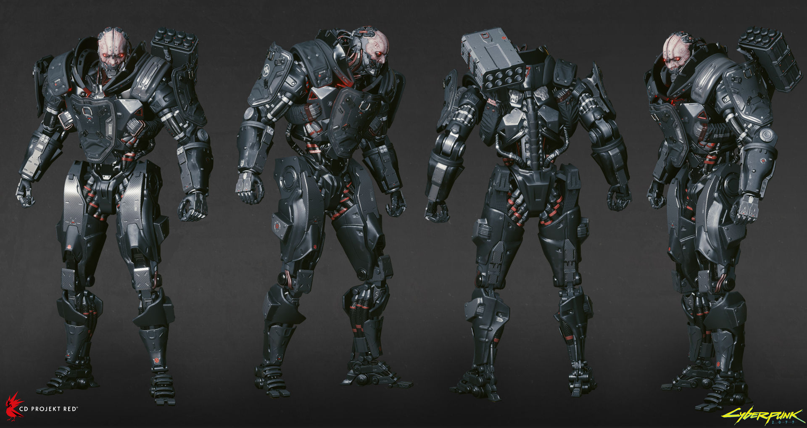

V
“无名小卒，还是名扬天下？”

V是由玩家所控制的角色，拥有不同的出身与背景，不同的出身决定了他们之后为人处事的风格与态度。但不管什么出身，之后V会在杰克·威尔斯的引导下开始为成为夜之城的传奇来奋斗，在一系列的冒险中来感受这座不夜之城的魅力与危险。
V是一名初出茅庐的雇佣兵，虽然名不见经传但却野心勃勃，誓要创出一番名堂。游戏开场，V和朋友杰克·威尔斯靠接中间人的各种委托积累自己的名声，于各方势力间斡旋，在枪口下讨生活。 某一天，V和杰克·威尔斯接到一笔“大买卖”，开始追寻一种独一无二的植入体——只要得到它，就能掌握获得永生的关键。在这个过程中V遇到了强尼·银手的数字幽灵，一段传奇就此展开。 游戏过程中玩家可以自定义角色的义体、技能和玩法，探索包罗万象的城市。玩家做出的选择也将会对剧情和周遭的世界产生影响。
强尼·银手
“醒醒吧，武侍，咱们把这座城市，烧成灰。”
人们说，你不需要性和毒品、躁郁、目无法纪，一次接一次地乱搞男女关系，也能成为传奇的摇滚小子。
但是强尼·银手这人很传统。
这位武侍乐队的头面人物、魅力超凡的梦想家、心怀理想的反叛者、公司的死敌（特别是荒坂）和邪典单曲《插管》和《永不消逝》背后的创作者，目前正以数字房客的身份住在Ｖ的大脑里。银手在袭击荒坂塔的时候命丧黄泉。他被亚当·重锤打中，随后又死在了灵魂杀手的手里。但有些摇滚小子永远不会真正地消逝。有例为证：银手的人格意识体在荒坂实验室里保存了几十年，随后被加载到一个名叫RELIC的原型生物芯片中，经历了一系列意外之后，最后进入了Ｖ的大脑。如果你以为比起和一个陌生人共享自己的头脑，被永远禁钢在赛博空间里要更加糟糕，那么你就大错特错了。对于强尼这样极端自我和自恋的人来说，前者就是人间地狱。 ——《赛博朋克2077》游戏内数据库
竹村五郎
“一定要小心，毕竟我们都远离家乡。”
荒坂三郎的保镖中唯一一个受到重大冲击的。尽管他一直服从命令，但还是无法阻止主人死于三郎的儿子赖宣之手。RELIC被盗后，竹村去追捕窃贼，最终来到一个填埋场，在那里干掉了德克斯特·德肖恩，救下了V，也就是赖宣罪行仅存的目击证人。为了追求真相，竹村成为荒坂重金悬赏的逃犯，夜之城的所有特工都在追捕他。在复仇愿望的驱使下，这名前保镖决计要看到杀害三郎的凶手得到惩罚，否则不罢休，哪怕这意味着要与Ｖ这样的小贼合作。 ——《赛博朋克2077》游戏内数据库
杰克·威尔斯
“伏特加加冰，青柠汁，姜汁啤酒，还有一点点爱 ”

海伍德的骄傲，更是威尔斯太太的骄傲。杰克很顽固，他想要什么东西就非得弄到手不可（不然你就听他唠叨吧）。杰克总是对生活抱着很大的期望，或许是太大了。
年少时他加入了瓦伦蒂诺帮，但认识到自己的有多厉害之后，他退出了帮会。多年来他都在残酷的佣兵圈子里打拼，因为想要跟大哥们坐一张桌子，光有积极能干的态度还不够，你还需要街头上的名声。杰克的人生目标一向都是成为来生的传奇人物，顺便赚它个一大票。 ——《赛博朋克2077》游戏内数据库
朱迪·阿尔瓦雷兹
“慢工出细活，再给我两分钟，你马上就能见识到超梦分析的厉害了”
在丽姿酒吧里，作为超梦体验专家运营着酒吧。 朱迪·阿尔瓦雷兹是夜之城顶尖的超梦体验专家，拥有着为人称道的技术、创新和创意。为了更上一层楼，她和莫克斯帮合作，充当超梦体验的技术专家和编辑。
最有天赋的超梦体验剪辑师和技术专家。如果她愿意，可以加入任何公司的娱乐部门，而且收入不菲，但朱迪十分看重自己的独立性，不愿意受人所制，因此拒绝了所有工作邀约。她怀抱着自由主义精神加入莫克斯帮，希望他们能改善夜之城人民的生活。她最大的弱点就是正义感爆棚，不知道什么时候该闭嘴并总是因此惹上麻烦。但对有些人来说，这是她最大的优点。 ——《赛博朋克2077》游戏内数据库
杰克·威尔斯
“他们称这场战争为绞肉机。但是宝贝，你才是肉，我是绞肉的”
亚当·重锤是一个相当典型的社会渣滓，一个名不经传的纽约小混混。在帮派被人端了之后，亚当应征入伍。经历了几年军旅生涯，他因行为不检而被强制退伍，并在纽约找到了一份雇佣枪手的差事。 对亚当来说，这种生活还不错：他做事毫无顾忌且残忍无比的风格为他带来了足够多的差事來赚足够多的票子，让他徜徉在枪支、装备、毒品和滥交中。最终他终于接到了那个毁了他一切的差事。在行动中几枚火箭弹将亚当炸成了肉饼。他的伙伴们将亚当剩下的部分一股脑塞进了包里并带回了纽约。一位神秘的公司慈善家联系到了他并给了他一个无法拒绝的提议：成为一个铁皮人为公司服务，或者去死。好像亚当会觉得这样会失去人性是什么大不了的事一样。
经过全身改装后，亚当·重锤的肉体已经所剩无几。当然…他一直都没什么人性。重锤负责处理荒坂那些见不得人的勾当，不过他自有一套行事的方式。早在2023年，是他在荒坂塔袭击事件中杀死了强尼·银手。随后，银手的人格被灵魂杀手程序数字化。如果重锤发现强尼又回来了，应该会想斩草除根吧。重锤做事一向不留隐患。 ——《赛博朋克2077》游戏内数据库